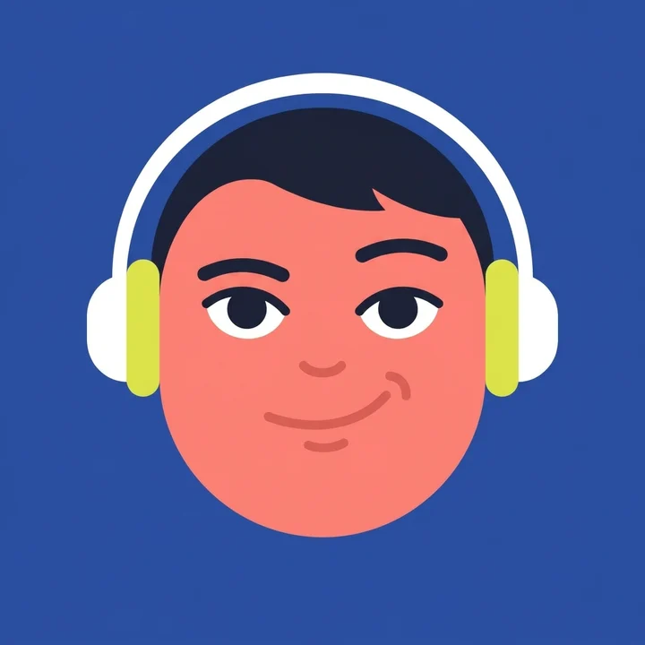
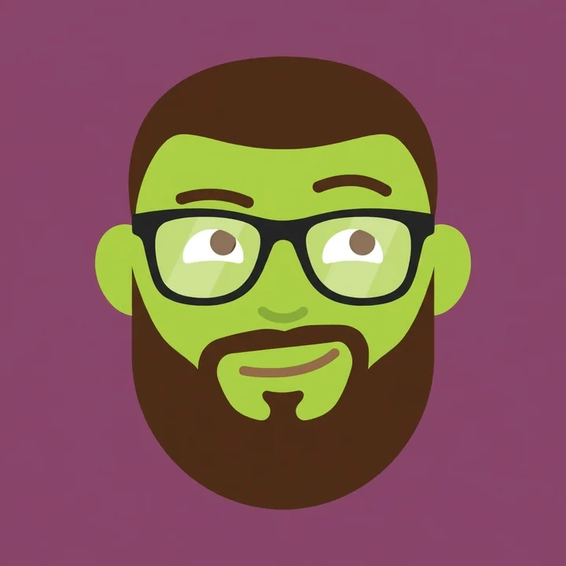
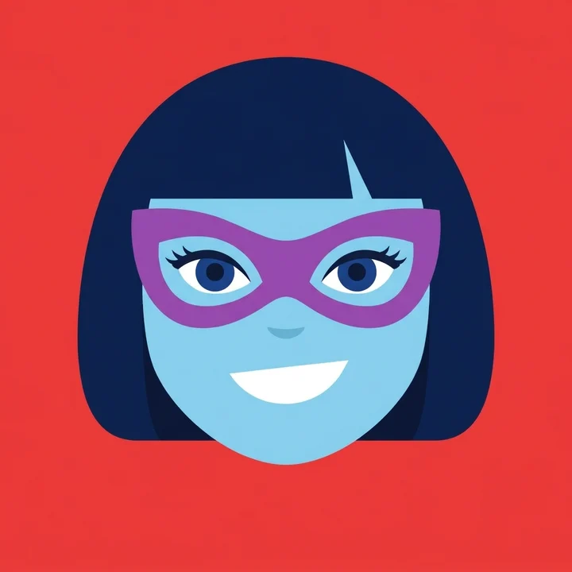
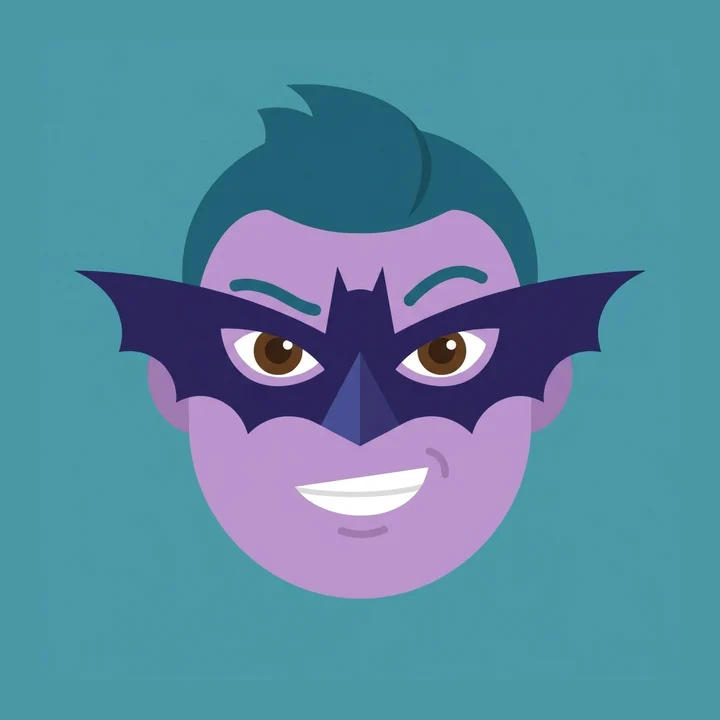
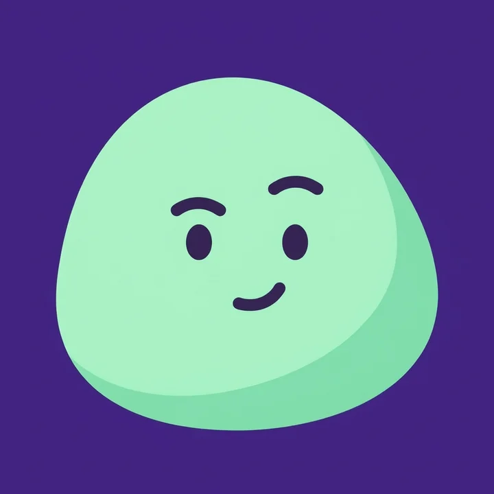

Les quatre nouveaux
Construits sur le modèle du corsaire : une tête compacte et colorée, distincte du fond, des éléments graphiques expressifs, des aplats propres. Une proposition par personnage. Les voir dans la barre →




Les neuf ensemble
